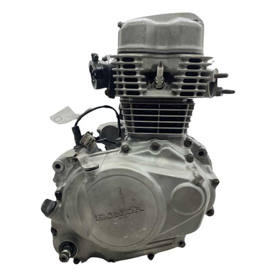
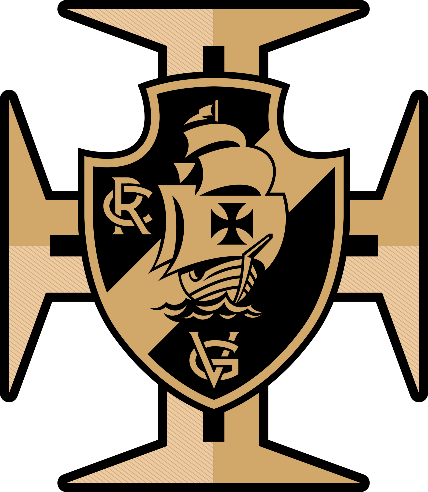
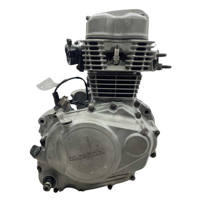
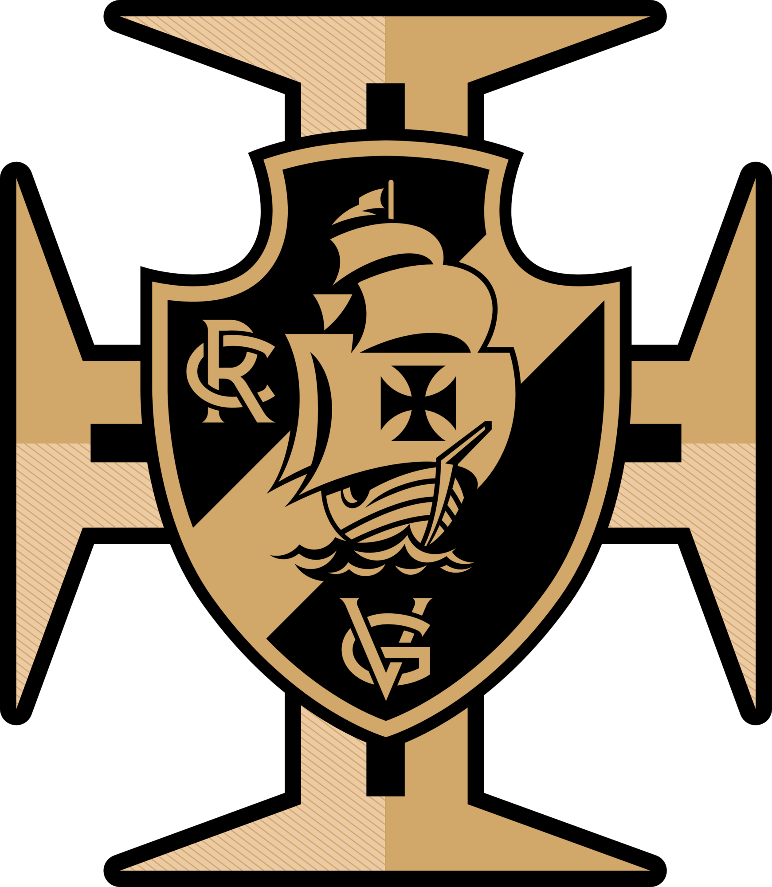

Sobre mim:
Natural de Joinville, Santa Catarina, sou apaixonado por tecnologia desde
os seis anos de idade. Tendo contato com computadores domésticos desde muito cedo,
desenvolvi boas noções e certa "paixão" por
estas peças intrigantes de
tecnologia. Aos 10 comecei a aventurar-me com "manutenções" simples, como formatação e
instalação de drivers, tendo contato com hardware aos 12, onde aprendi na
prática
como realizar a limpeza do micro e a instalação de novas peças,
além de já me aventurar com diagnóstico.
Interessei-me por overclock e relacionados por volta dos 14 anos de idade,
onde me aventurei subindo as frequências de uma GTX 760 da Zotac (que teve problemas de
artefato pouco tempo depois).
Embora o prejuízo financeiro tivesse me
desanimado, eu não parei. Adquiri uma GTX 1050 e realizei overclock na mesma semana que
instalei a mesma. Hoje, aos 19, ainda não parei. Rodo um Ryzen 5
5600G
com overclock para 4.5GHz fixos, RAMs em 3600MT/s e RX 580 com undervolt para menor
aquecimento, afinal, um homem sem uma dor de cabeça em casa é apenas um menino.
Meus interesses:
- Hardware de computadores.
- Eletrônica (Arduino, modificações de hardware em consoles).
- Elétrica (doméstica).
- Mecânica (automotiva, motocicletas e linha pesada).
- Console modding.
- Simuladores para computador (corrida e aéreo).
- Cibersegurança.
- Dirigir/pilotar.
Curiosidades sem razão alguma para serem apresentadas:
- O meu time do coração é o Vasco da Gama. E não, não é piada.
- Meu emprego atual não possui relação nenhuma com a área: sou professor de inglês.
- Realizando este trabalho eu percebi que tenho dificuldade extrema com HTML.
Meu gosto pessoal resumido em imagens:
 


